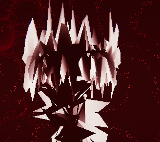

-

色達が色々、十人十色？
四色の奴らが自分のスコアの為に他の三色を蹴落とす!
争え!シューティングゲーム!色が好きだったので、色にまつわるゲームを作りました。
メニュー画面の裏のアニメーションなど、常に動いている画面を作りました。
対戦ゲームとコントローラーの接続両方を初めてやったゲームで、
UIとコントローラーの接続で開発が難航しました。
-

自分の相棒を抱えて投げてジャンプする、
脱出を目指すアクションゲーム!簡単な動きで出来る優しいアクションゲームです。
ボタンを押す以外でも、上に乗ったら抱える状態に変化させるとか、
細かいプレイヤーの行動にも対応してあげる作品でした。
UniTaskやDotweenを初めて使ったゲームで、
この作品を作りながら勉強しました。
-

少女が不思議な世界を冒険する
3Dアクションアドベンチャーゲーム!3Dの操作感を頑張って作ったゲームです。
操作のしやすさやアニメーションの滑らかさにこだわりました。
特にUnityのNavMeshを使った移動や、
カメラワークに力を入れました。
-

貴方はこの人形から逃げられる...?
薄暗く紅いホラーゲーム...。学校の文化祭で作成したホラーゲームです。
3人4脚で学校生活と並行しながら一か月間制作を続けてきました。
担当部分は、マップの作成とカメラの切り替えの部分です。
大変貴重な体験をさせて貰いました。